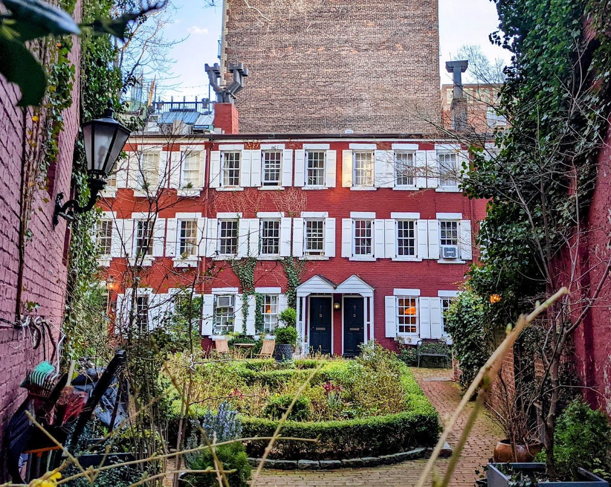
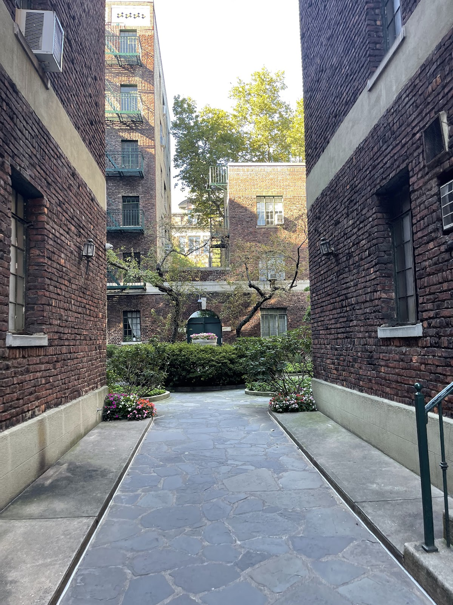
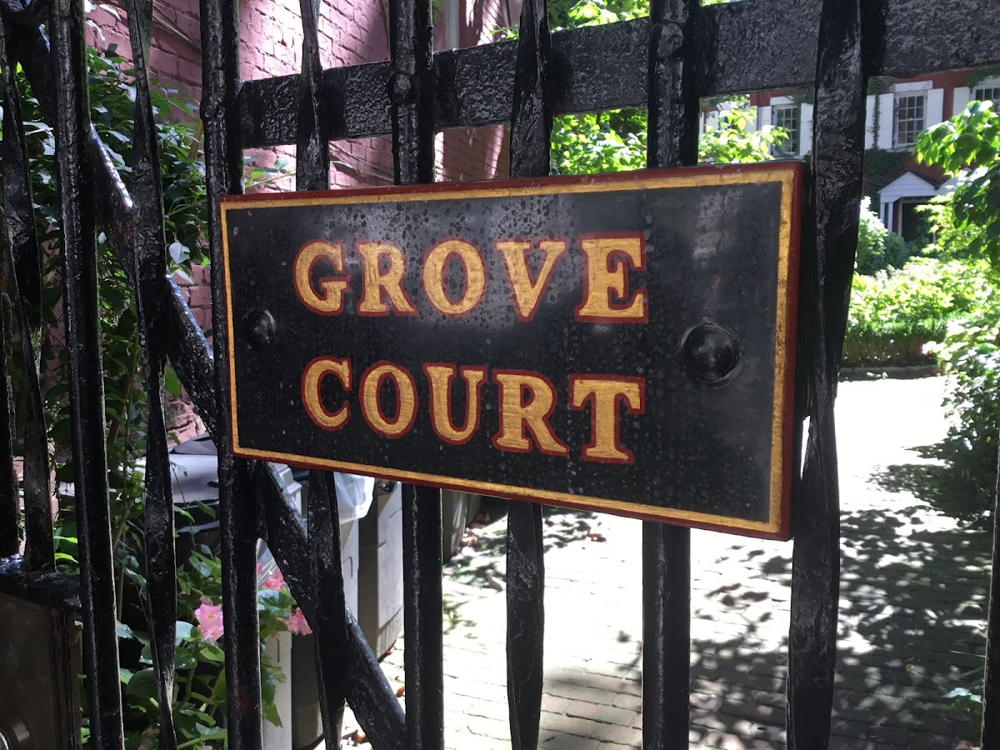
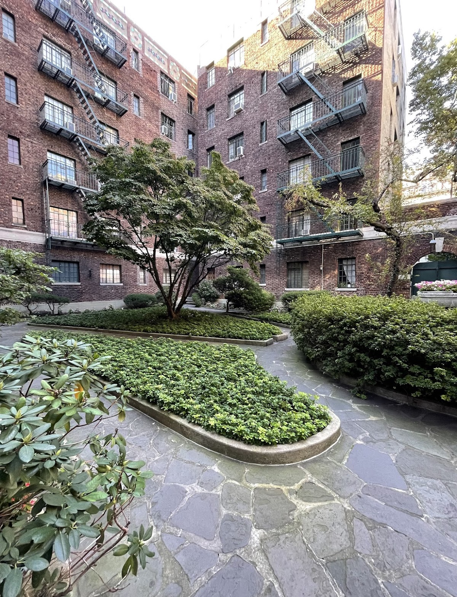
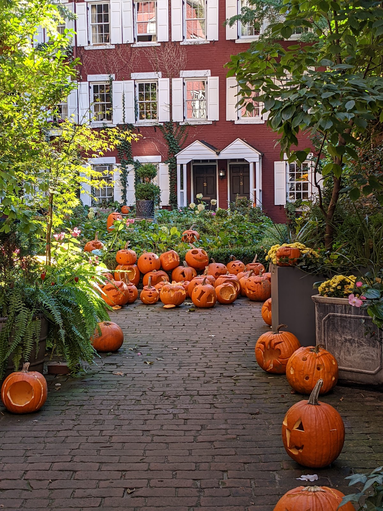

Courts & communities
Grove Court
A hidden courtyard of six townhouses located in Greenwich Village, Manhattan.
Background
Grove Court was developed in the 1850s by Samuel Cocks, a local grocer, to provide housing for working-class families. The courtyard's secluded nature made it a quiet retreat within the bustling city. Over time, it has become a charming and sought-after residential enclave.
Original AI-assisted background; not independently verified.
From the original map
The story of Grove Court begins in the mid-19th century. In 1848, Samuel Cocks, a grocer with a store at the corner of Grove and Bedford Streets, acquired the rear yards of properties along Grove Street from Samuel Stryker, who had been leasing the land from Trinity Church. Cocks saw an opportunity to create housing for working-class families, likely with the practical aim of securing a steady customer base for his grocery business. Construction of the six three-story Federal-style houses began shortly after and was completed in 1854. Initially, these homes were considered a single tax lot, addressed as 10½ Grove Street, and were modest in size—about 990 square feet each—compared to the larger townhouses typical of the era. In its early days, Grove Court was far from the picturesque retreat it is today. Built for laborers and tradesmen, the enclave was a working-class community, and its secluded location behind the main street contributed to its reputation as a less desirable area. Historical accounts suggest it was once a rough spot, even earning the nickname "Mixed Ale Alley" due to the drinking habits of its residents. Photographs from the early 20th century, such as those by Jessie Tarbox Beals and Arthur D. Chapman, show laundry hanging in the courtyard, a testament to its utilitarian roots.
Homes and shared residential spaces may be private. View from public streets unless entry is clearly permitted; map pins are reference points, not confirmed entrances.
Nearby places
Straight-line distances, not walking routes.
Discussion & corrections





Photo credits
Jason Braun, Maria Eugenia, David Herszenson, Naďa Černá, TheMrscarface2009, Slava Shpigel, vivi chan, Carlos Usán40.73206, -74.00581 · Explore the surrounding area ↗